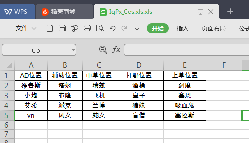
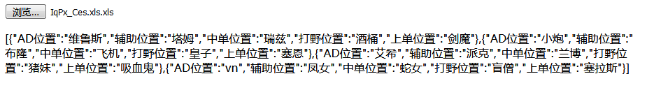

前面的文章中已经讲过关于js表格的导出，此文章主要说到的是excel文件如何导入到网页中，并在网页端显示。
代码部分:
<!DOCTYPE html>
<html>
<head>
<meta charset="UTF-8">
<title>js导入excel</title>
</head>
<body>
<input type="file"onchange="importf(this)" />
<p id="excelContent"></p>
<script src="xlsx.full.min.js"></script>
<script src="https://cdn.bootcss.com/jquery/3.2.1/jquery.js"></script>
<script src="https://cdn.bootcss.com/xlsx/0.11.5/xlsx.core.min.js"></script>
<script>
var wb;//读取
var rABS = false;
//开始导入
function importf(obj) {
if(!obj.files) {
return;
}
var f = obj.files[0];
var reader = new FileReader();
reader.onload = function(e) {
var data = e.target.result;
if(rABS) {
wb = XLSX.read(btoa(fixdata(data)), {//手动转化
type: 'base64'
});
} else {
wb = XLSX.read(data, {
type: 'binary'
});
}
/**
* wb.SheetNames[0]是获取Sheets中第一个Sheet的名字
* wb.Sheets[Sheet名]获取第一个Sheet的数据
*/
var excelJson = XLSX.utils.sheet_to_json(wb.Sheets[wb.SheetNames[0]]);
document.getElementById("excelContent").innerHTML= JSON.stringify( excelJson );
};
if(rABS) {
reader.readAsArrayBuffer(f);
} else {
reader.readAsBinaryString(f);
}
}
//文件流转BinaryString
function fixdata(data) {
var o = "",
l = 0,
w = 10240;
for(; l < data.byteLength / w; ++l) o += String.fromCharCode.apply(null, new Uint8Array(data.slice(l * w, l * w +
w)));
o += String.fromCharCode.apply(null, new Uint8Array(data.slice(l * w)));
return o;
}
</script>
</body>
</html>
导入前的表格：

导入后的显示：
